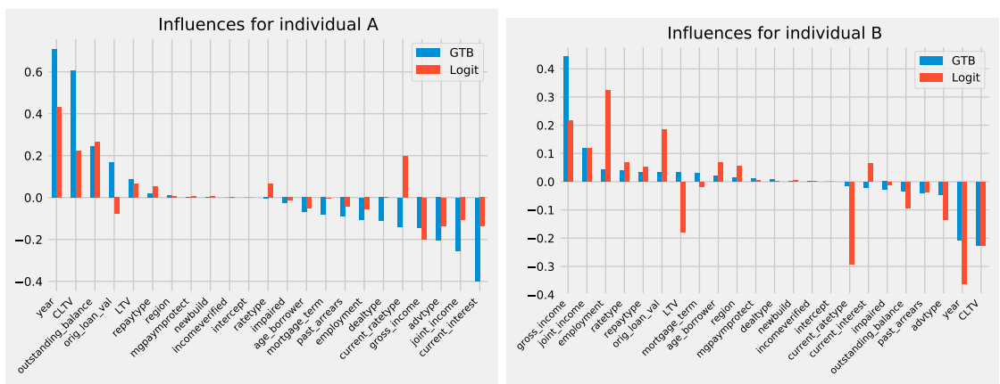
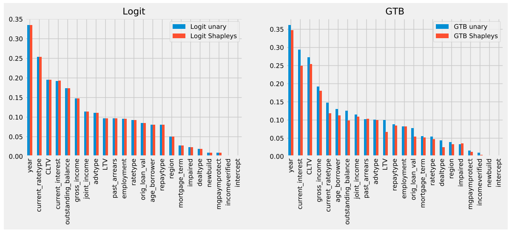
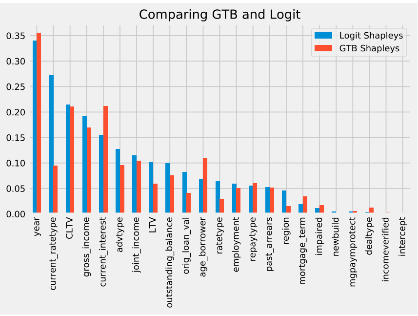
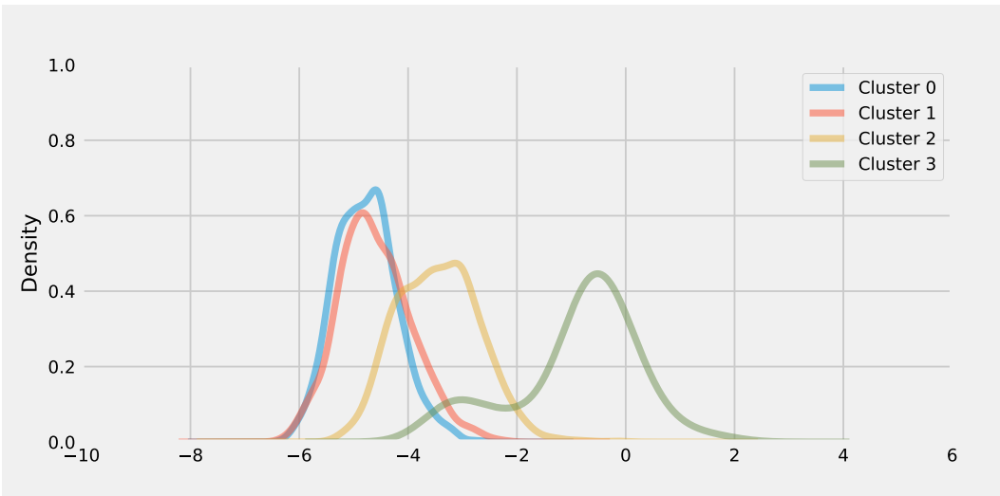
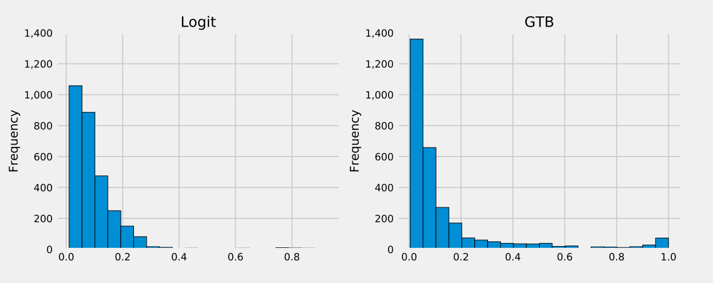

Last updated: 2022-05-09
Checks: 7 0
Knit directory: Interpretable-ML-Models/
This reproducible R Markdown analysis was created with workflowr (version 1.7.0). The Checks tab describes the reproducibility checks that were applied when the results were created. The Past versions tab lists the development history.
Great! Since the R Markdown file has been committed to the Git repository, you know the exact version of the code that produced these results.
Great job! The global environment was empty. Objects defined in the global environment can affect the analysis in your R Markdown file in unknown ways. For reproduciblity it’s best to always run the code in an empty environment.
The command set.seed(20220121) was run prior to running the code in the R Markdown file. Setting a seed ensures that any results that rely on randomness, e.g. subsampling or permutations, are reproducible.
Great job! Recording the operating system, R version, and package versions is critical for reproducibility.
Nice! There were no cached chunks for this analysis, so you can be confident that you successfully produced the results during this run.
Great job! Using relative paths to the files within your workflowr project makes it easier to run your code on other machines.
Great! You are using Git for version control. Tracking code development and connecting the code version to the results is critical for reproducibility.
The results in this page were generated with repository version bbe14bb. See the Past versions tab to see a history of the changes made to the R Markdown and HTML files.
Note that you need to be careful to ensure that all relevant files for the analysis have been committed to Git prior to generating the results (you can use wflow_publish or wflow_git_commit). workflowr only checks the R Markdown file, but you know if there are other scripts or data files that it depends on. Below is the status of the Git repository when the results were generated:
Ignored files:
Ignored: .Rhistory
Ignored: .Rproj.user/
Ignored: analysis/.Rhistory
Untracked files:
Untracked: Interpretable Machine Learning.pptx
Untracked: analysis/methodology.knit.md
Untracked: code/.ipynb_checkpoints/HELOC-Data-Scientist-checkpoint.ipynb
Untracked: code/.ipynb_checkpoints/HELOC-Service-User-checkpoint.ipynb
Unstaged changes:
Deleted: analysis/AIX360.Rmd
Deleted: analysis/about.Rmd
Note that any generated files, e.g. HTML, png, CSS, etc., are not included in this status report because it is ok for generated content to have uncommitted changes.
These are the previous versions of the repository in which changes were made to the R Markdown (analysis/BoE-QII.Rmd) and HTML (docs/BoE-QII.html) files. If you’ve configured a remote Git repository (see ?wflow_git_remote), click on the hyperlinks in the table below to view the files as they were in that past version.
| File | Version | Author | Date | Message |
|---|---|---|---|---|
| html | 9a4e36f | JJCoen | 2022-04-29 | Build site. |
| html | 389e88a | JJCoen | 2022-04-29 | Build site. |
| html | 8285ea9 | JJCoen | 2022-04-29 | Build site. |
| html | 24306a5 | JJCoen | 2022-04-28 | Build site. |
| html | b3efdcd | JJCoen | 2022-04-28 | Build site. |
| html | ad082e7 | JJCoen | 2022-04-28 | Build site. |
| html | e2267c0 | JJCoen | 2022-04-28 | Build site. |
| Rmd | 063a6fc | JJCoen | 2022-04-28 | update bibliography in QII and LR Interpretation |
| html | 34bb958 | JJCoen | 2022-04-28 | Build site. |
| html | 1107883 | JJCoen | 2022-04-27 | Build site. |
| html | a572aaf | JJCoen | 2022-04-27 | Build site. |
| html | 637b308 | JJCoen | 2022-04-23 | Build site. |
| html | dbfde2b | JJCoen | 2022-04-23 | Build site. |
| html | c6c7a6b | JJCoen | 2022-03-23 | Build site. |
| Rmd | 2aff2fb | JJCoen | 2022-03-23 | wflow_publish(“analysis/BoE-QII.Rmd”) |
| html | 393efb7 | JJCoen | 2022-03-21 | Build site. |
| Rmd | a591bbf | JJCoen | 2022-03-21 | wflow_publish(“analysis/BoE-QII.Rmd”) |
| html | 1bb7638 | JJCoen | 2022-03-21 | Build site. |
| html | effef85 | JJCoen | 2022-03-21 | html |
| Rmd | 7fc0baa | JJCoen | 2022-03-21 | Image of type 1 explanations |
| html | 384ce76 | JJCoen | 2022-03-19 | Build site. |
| Rmd | 354233b | JJCoen | 2022-03-19 | wflow_publish(c(“analysis/BoE-QII.Rmd”, “analysis/HELOC-data-cleaning.Rmd”)) |
| html | d7f5517 | JJCoen | 2022-03-18 | Build site. |
| Rmd | 86b92ec | JJCoen | 2022-03-18 | wflow_publish(files = c(“analysis/BoE-QII.Rmd”)) |
| html | 0a2fcaf | JJCoen | 2022-03-18 | Build site. |
| Rmd | 2a9254e | JJCoen | 2022-03-18 | wflow_publish(files = c(“analysis/BoE-QII.Rmd”)) |
The QII model is a separate model used to identify the influence of features on the output. These measures are derived from Shapley values, which are based on Game Theory. By varying inputs and observing the effect on output, it is possible to determine the influence of individual features over a large range of instances. This allows for the presentation of four types of explanations, that are relevant to some or all of the stakeholders.
Two distinct models, logistic regression (logit) and Gradient Boosted Trees, were created. Each has a seperate QII model to assess the influence of features.
Explanations are not given in textual terms, rather graphical display facilitates explanation. The person-roles are according to practice in the Bank of England. Since it is a central bank, the regulatory function receives more attention.
These answer questions related to individual predictions. Plots are generated for specific applicants showing feature influence in terms of log(Odds of default) compared to the average log odds across all applicants. Figure 1 shows plots for two individual applicants.
 Figure 1: Which features mattered in individual predictions? Source: Bracke (2019)
The reference level, at \(y = 0\) is the mean log(Odds) across all applications. Features increase or decrease the probability of default (PD) depending upon a positive or negative value for log(Odds) respectively.
Type 1 explanations enable the Developer to check if model results are sensible in individual cases and to check against benchmarks. They provide additional information to the Conduct Regulator in order to validate model development.
Type 1 explanations show local influence. The QII co-explainer model also gives global influence.
These answer questions concerning the influence of features across a range of instances, such as the complete test set. This allows for a general characterisation of a model and its operation. The QII model determines feature influence simply by averaging absolute values for each individual in the test set. This enables comparison of ML models, as in figure 2, which has plots for the logit and GBT models.
 Figure 2: Global feature influences, using log odds scores. Source: Bracke (2019)
The Unary values determine influence by randomising individual features while the Shapley method derives influence using game theory.
When applied to the test set, type 2 explanations give an overview of model generalisation and answer concerns about how a model is likely to operate in deployment. These explanations allow a Developer to check that model results make sense. First-line checkers have additional detail if there are problems with model accuracy or AUC value and they can report issues to management. It provides information to Conduct Regulators to ensure that model development follows best practice.
Type 3 explanations compare a ML model with a linear model, since the components of the linear model are accessible. In figure, the linear benchmark is the logistic / logit model. By comparing a ML model with the linear baseline, it enables the developer to determine if there are interactions between features. This could occur in individual instances or groups of instances. Shapley values are used since, after taking interactions into account, features have less influence than considering them in isolation. So it gives assurance that feature interactions have been removed.
 Figure 3: Global Shapley influences, Logit vs GTB. Source: Bracke (2019)
These types of graphs / explanations are of use to both model developer and first-line checker.
In order to assess overall model operation, type 4 explanations compare feature value with feature influence. This is to determine whether high or low values have greater influence. Both correlations and scatterplots of feature value against influence are presented. The purpose of scatterplots is to check for non-linear relationships. Again, the measure for feature influence is log(Odds).
To inspect for interaction between features, the QII model clusters features with similar influence (using K-means clustering).
 Figure 4: Clusters of features showing distribution of PD. Source: Bracke (2019)
The model then considers relative influence of features within a cluster.
These explanations result from stress testing by simulation. A subset of the test data is modified to reflect stressed conditions. Graphs show the distribution of default probability across the subset of loan applications. They also compare different models using stress data.
 Figure 5: Probability of default distribution for stress data. Source: Bracke (2019)
While the magnitude and sign of the log(Odds) give relative importance of features, these values are not intuitive. It unlikely that anyone, apart from the Developer or Data Analyst, understands this metric. Nevertheless, the same criticism can be made of the percentage \(R^2\) of a given feature in multiple linear regression (Johnson, 2000).
Part of the originality in this thesis is to assess model plots in accordance with graphics principles and best practices (Vandemeulebroecke et al., 2019).
Type 1 Explanations
The purpose of the graph is apparent (to show feature influence). It shows the data clearly in this case. However, high dimension data might lead to a cluttered plot. The message is emphasised in the title of the graph (which features mattered most).
In terms of practice, it uses a standard plot form (waterfall chart) to show deviance, it has a common scale, and it uses elements (bars) that give the most effective representations (Cleveland and McGill, 1985).
Type 2 and type 3 explanations
The attributes of type 1 explanations also apply for type 2 However, the message that the graph conveys is not clear. A better title might be “Logit and GBT have similar global influence”.
The same applies to type 3 explanations, although the message given in the title could make reference to interactions.
Type 4 Explanations The pitfall of presenting correlations and scatterplots is the possibility of “getting lost in the detail”, when there are many features.
It is apparent that the purpose of Figure 5 to display PD distribution and compare clusters. Presentation of the data is unclear in the lack of scale units on the x-axis. In addition, the message to be taken from the graph is absent.
In summary, consider that a hospital will allow a patient access to clinical notes only when a doctor is present to explain what they mean. In the explanations provided by the QII model would seem to require input from a developer or data analyst in order to elaborate on their significance. As such, the criticism of an engineering focus in ML interpretability is borne out here.
sessionInfo()R version 4.1.2 (2021-11-01)
Platform: x86_64-w64-mingw32/x64 (64-bit)
Running under: Windows 10 x64 (build 22000)
Matrix products: default
locale:
[1] LC_COLLATE=English_United States.1252
[2] LC_CTYPE=English_United States.1252
[3] LC_MONETARY=English_United States.1252
[4] LC_NUMERIC=C
[5] LC_TIME=English_United States.1252
attached base packages:
[1] stats graphics grDevices utils datasets methods base
other attached packages:
[1] workflowr_1.7.0
loaded via a namespace (and not attached):
[1] Rcpp_1.0.8 bslib_0.3.1 compiler_4.1.2 pillar_1.7.0
[5] later_1.3.0 git2r_0.29.0 jquerylib_0.1.4 tools_4.1.2
[9] getPass_0.2-2 digest_0.6.29 jsonlite_1.7.3 evaluate_0.15
[13] tibble_3.1.6 lifecycle_1.0.1 pkgconfig_2.0.3 rlang_1.0.1
[17] cli_3.2.0 rstudioapi_0.13 yaml_2.3.5 xfun_0.29
[21] fastmap_1.1.0 httr_1.4.2 stringr_1.4.0 knitr_1.37
[25] sass_0.4.0 fs_1.5.2 vctrs_0.3.8 rprojroot_2.0.2
[29] glue_1.6.1 R6_2.5.1 processx_3.5.2 fansi_1.0.2
[33] rmarkdown_2.11 callr_3.7.0 magrittr_2.0.2 whisker_0.4
[37] ps_1.6.0 promises_1.2.0.1 htmltools_0.5.2 ellipsis_0.3.2
[41] httpuv_1.6.5 utf8_1.2.2 stringi_1.7.6 crayon_1.5.0